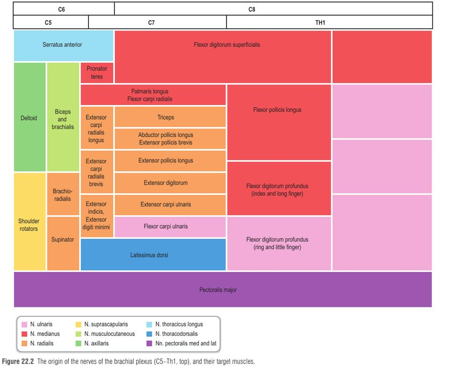
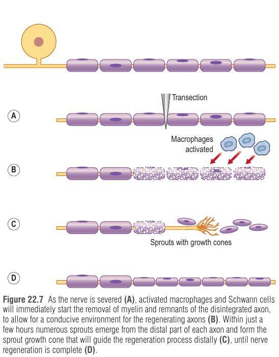
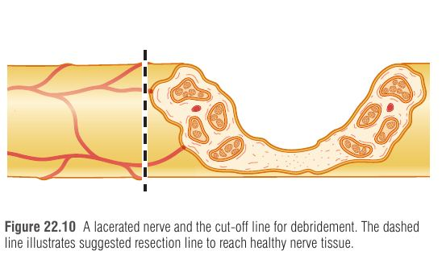
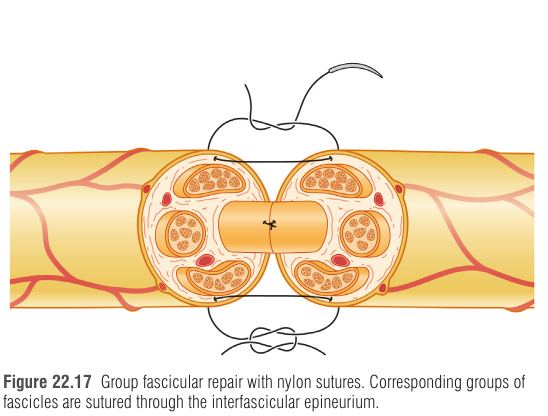
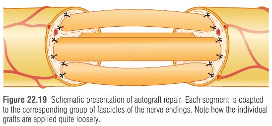

פגיעת עצב פריפרי בגפה העליונה היא פגיעה "קטנה" בגודל ו"ענקית" בהשלכות: עצבים הם רק כ-3% מפגיעות היד, אבל כמעט תמיד פוגעים בתפקוד – תחושה, כוח, מיומנות, רגישות לקור וכאב. הנפגע הטיפוסי הוא גבר צעיר (גיל חציוני 29, עד 75% גברים), והעלות לחברה עצומה: כ-70,000$ לפגיעת עצב מדיאני וכ-45,000$ לאולנרי, 87% מהן בגלל אובדן תפוקה. הפרק עוסק בשאלה אחת מרכזית: איך, מתי ובמה לחבר עצב קטוע כך שהאקסונים יגיעו בזמן ליעד הנכון.
השורשים הקדמיים (מוטוריים, גופי תא בחוט השדרה) והאחוריים (תחושתיים, גופי תא ב-dorsal root ganglion) מתאחדים לעצב שדרתי. הענפים הקדמיים של C5–T1 יוצרים את המקלעת הזרועית: C5–C6 גזע עליון, C7 אמצעי, C8–T1 תחתון. החלוקות הקדמיות יוצרות את ה-cord הלטרלי והמדיאלי (מכופפים), והאחוריות את ה-cord האחורי (מיישרים – העצב הרדיאלי והאקסילרי).
וריאציות אנטומיות חשובות (מסבירות למה בדיקה קלינית "לא מסתדרת" לפעמים):
| וריאציה | בין מה למה | משמעות |
|---|---|---|
| Martin–Gruber | באמה – בעיקר AIN (מדיאני) → אולנרי; עד 15% מהאנשים | פגיעה "אולנרית" גבוהה עם שרירים אינטרינזיים שמורים חלקית |
| Riche–Cannieu | בכף היד – ענף מוטורי אולנרי ↔ ענף תנרי של המדיאני | שרירי תנר מתפקדים למרות פגיעה מדיאנית |
| Berrettini | בכף היד – ענף מקשר תחושתי מדיאני ↔ אולנרי (שכיח) | שונות באזור התחושה של האצבעות |

כל אקסון עטוף בתאי שוואן (Schwann cells). בסיב ממוילן, סדרת תאי שוואן יוצרת מעטפת מיאלין והרווח ביניהם הוא node of Ranvier – ולכן ההולכה "קופצת" מצומת לצומת (saltatory conduction) ומהירה. בסיב לא-ממוילן, תא שוואן אחד עוטף כמה אקסונים דקים. קוטר: 0.4–1.25 מיקרון (לא ממוילן) מול 2–22 מיקרון (ממוילן). עם הגיל נעלמים עד 26% מהסיבים (בין העשור ה-2 ל-8) – אחד ההסברים לכך שגיל הוא גורם פרוגנוסטי.
| שכבה | מה היא עוטפת | למה זה חשוב בניתוח |
|---|---|---|
| Endoneurium + basal lamina | סיב עצב בודד (אקסון + שוואן) | ה"צינור" (endoneurial tube) שמכוון את האקסון המתחדש; שלם בדרגה 2 → אין בלבול יעדים |
| Perineurium | קבוצת סיבים = פסיקול (fascicle) | מחסום דיפוזיה; בתוכו לחץ נוזל אנדונוריאלי חיובי קל. תפירה פסיקולרית עוברת דרכו |
| Epineurium | כל הפסיקולים + רקמת חיבור רופפת | שכבת התפירה הסטנדרטית; עבה יותר מעל מפרקים ובעצבים שטחיים; כלי הדם האפינוריאליים משמשים סימן יישור |
| Mesoneurium | רקמה אראולרית מחוץ לאפינוריום | מאפשרת גלישה (excursion) של העצב בתנועה |
העצב מקבל כלי דם סגמנטליים שמתפצלים לרשתות באפינוריום, בפרינוריום ובאנדונוריום (נימים שחודרים את הפרינוריום באלכסון). יש רזרבה גדולה – ולכן אפשר לגייס (mobilize) עצב לאורך רב בלי לפגוע בזרימה, וכלי הדם הסמוכים מפותלים כדי לאפשר גלישה. כלי הדם האפינוריאליים רגישים יותר לטראומה, ולכן בצקת אפינוריאלית מופיעה בקלות רבה יותר מאנדונוריאלית.
חתך רוחב סכמטי: epineurium (כתום), פסיקולים עם perineurium (כחול), סיבים בודדים עם endoneurium (ירוק/צהוב). דרגות סנדרלנד מתקדמות מהמרכז החוצה.
חיתוך ← איטום הקצה הפרוקסימלי (תלוי סידן) ← אות רטרוגרדי לגוף התא ("ממצב תחזוקה למצב הישרדות וצמיחה") ← פירוק האקסון והמיאלין בקטע הדיסטלי (ניוון ולרי) ← תאי שוואן מתרבים ויוצרים bands of Büngner ומפרישים גורמי גדילה ← חרוט צמיחה (growth cone) "מגשש" ומתקדם 1–3 מ"מ ליום ← הגעה לאיבר המטרה.
גוף התא (הפרוקסימלי): האקסון נאטם בקצהו ונסוג מעט. מקצה האקסון נשלחים אותות (דרך הובלה אקסונלית רטרוגרדית לאורך מיקרוטובולים) אל הגרעין, שמשנה שעתוק ותרגום – מייצור נוירוטרנסמיטרים לייצור חלבוני שלד ומבנה לצמיחה. בפגיעה פרוקסימלית (קרובה לגוף התא) ה"מכה" לנוירון קשה יותר ושיעור מוות נוירונלי גבוה יותר – זו אחת הסיבות שפגיעות פרוקסימליות מסתיימות גרוע יותר.
הקטע הדיסטלי – ניוון ולרי (Wallerian degeneration): האקסון, שנותק ממקור החלבונים שלו, מתפרק; תאי שוואן משילים את המיאלין. מקרופאגים ותאי שוואן "מנקים את השטח" – זו לא דלקת זיהומית אלא ניקוי סטרילי שנועד לפנות מקום לאקסונים החדשים. תאי השוואן המופעלים מתרבים בתוך ה-basal lamina שלהם ויוצרים עמודות – bands of Büngner – "מסילות" מוליכות. הם מייצרים גורמים נוירוטרופיים: NGF, BDNF, β-FGF, CNTF, LIF, IGF, TGF ואינטרלאוקינים.
חרוט הצמיחה: בתוך שעות יוצאים מקצה כל אקסון נבטים רבים (sprouts), ובקצה כל אחד "יד קטנה" עם אצבעות (filopodia) שמגששות את הסביבה. ההתקדמות מבוססת פילמור אקטין; חלבוני מטריקס – laminin (דרך קולטני integrin), fibronectin, tenascin, קולגן – מושכים ומכוונים אותו.
למה עיכוב בתיקון מזיק? ככל שעובר זמן, יותר תאי שוואן בקטע הדיסטלי עוברים אפופטוזיס (מסלול פנימי-מיטוכונדריאלי או חיצוני דרך Fas/TNFR1), הם מייצרים פחות גורמי גדילה, קצוות העצב נסוגים ונלכדים בצלקת, ולוחיות הקצה המוטוריות בשריר מתנוונות באופן בלתי הפיך. האקסון אמנם ממשיך לצמוח, אבל מגיע ל"בית ריק".
שרשרת האירועים אחרי חיתוך עצב (קריאה מימין לשמאל), והסיבה הביולוגית שבגללה תיקון מוקדם עדיף.
ניוון ולרי לוקח זמן בבני אדם – ולכן הקטע הדיסטלי ממשיך להוליך בגירוי חשמלי ימים רבים אחרי החיתוך. נוירוגרפיה/EMG אמינה רק אחרי 3–4 שבועות (סימני דנרבציה ברורים לעיתים רק אחרי 4–6 שבועות) – ואסור שהמתנה לבדיקה תעכב אקספלורציה כשיש אינדיקציה ברורה לניתוח.

| Seddon | Sunderland / Mackinnon | מה נפגע | Tinel | פרוגנוזה / טיפול |
|---|---|---|---|---|
| Neurapraxia | 1 | חסימת הולכה פיזיולוגית (לחץ חיצוני, מתיחה ניתוחית, איסכמיה מקומית), ללא ניוון | שלילי | החלמה מלאה בתוך ימים עד 3–4 חודשים; שמרני |
| Axonotmesis | 2 | אקסון נקרע, endoneurium ו-basal lamina שלמים → ניוון ולרי | חיובי, מתקדם | התחדשות בתוך הצינור המקורי (1–3 מ"מ ליום), אין אי-התאמת יעדים; החלמה מלאה |
| 3 | + נזק ל-endoneurium; פסיקולים שלמים | חיובי, מתקדם | צלקת תוך-פסיקולרית, אי-התאמה (בעיקר פרוקסימלית – פסיקולים מעורבים); החלמה משתנה; ניתוח לא תמיד מועיל | |
| Neurotmesis | 4 | רק epineurium שלם; שיבוש פנימי מלא | חיובי במקום, לא מתקדם | נוירומה; אין החלמה ללא ניתוח – כריתה ותיקון, לרוב שתל |
| 5 | חיתוך מלא של גזע העצב | — | תיקון ניתוחי מוקדם; לרוב עם פגיעה בגידים/כלי דם/עצם | |
| — | 6 (Mackinnon) | פגיעה מעורבת – neuroma-in-continuity (מתיחה סגורה, ירי, דקירה) | משתנה | אקספלורציה + אלקטרופיזיולוגיה תוך-ניתוחית להבחנה בין פסיקולים מתאוששים (II–III) לכאלה שדורשים שתל (IV–V) |
הכלל התוך-ניתוחי: אם נרשם פוטנציאל פעולה (NAP) מעבר לאזור הצלקת → דרגה II/III, צפויה החלמה ספונטנית; אין פוטנציאל → דרגה IV/V → כריתה ושתל.
| סוג פגיעה | EMG/נוירוגרפיה | אקספלורציה | תיקון/שחזור |
|---|---|---|---|
| חיתוך חד (sharp transection) | — | מיידית | מיידי |
| פצע פתוח עם ריסוק עצב | 4–6 שבועות | מיידית | מיידי אם יש נתק מאקרוסקופי (אחרי רוויזיות לפצע נקי); מושהה אם העצב ברציפות |
| פצע ירי | 4–6 שבועות | מיידית | כנ"ל |
| פגיעת מתיחה סגורה | 4–6 שבועות | מושהית | 3–4 חודשים אם אין סימני התחדשות |
מעל 80% מהפגיעות ניתנות לתפירה ראשונית קצה-לקצה. הקריטריון הקלאסי: תפר 9-0 יחיד מחזיק את הקצוות בלי שייפרדו ובלי שהאפינוריום ייקרע.

| שיטה | יתרון | חיסרון | מתי |
|---|---|---|---|
| אפינוריאלי (ברירת מחדל) | פחות דיסקציה, שומר על אספקת דם | פחות "ספציפיות" פסיקולרית | כל עוד אפשרי טכנית; בעיקר דיסטלית |
| פסיקולרי קבוצתי (group fascicular) | שומר על ספציפיות מוטורי/תחושתי | דיסקציה עמוקה – סיכון לכלי דם | כשהקבוצות נפרדות היטב – אולנרי בשורש כף היד (מוטורי ותחושתי נפרדים) |
| קצה-לצד (end-to-side) | אין צורך בשתל; מקצר מרחק | תוצאות מעורבות; נביטה דורשת פגיעה אקסונלית בתורם | אין גדם פרוקסימלי / פגיעה פרוקסימלית גבוהה; שימושי יותר למוטורי |

למה הוא עובד: השתל מספק "פיגום" ביולוגי מלא – תאי שוואן עם basal lamina, גורמי גדילה ומולקולות אדהזיה (laminin, fibronectin) – ומבטל כל מתח בתפר. למה עצב דק עדיף: השתל שורד בהתחלה על דיפוזיה מהמיטה עד שנימים חודרים מהפריפריה ומהקצוות; שתל עבה → נמק מרכזי וצלקת. לכן עצב גדול מגושר בכמה "כבלים" (cable grafts) דקים, מונחים ברפיון ולא צמודים זה לזה.
| עצב תורם | אורך | חסר תחושתי | הערות |
|---|---|---|---|
| Sural | 30–40 ס"מ | גב השוק וצד לטרלי של כף הרגל | התורם העיקרי. יוצא מה-tibial מאחורי הברך + ענפים מקשרים מה-peroneal (לחתוך לפני משיכה). חתך בין המלאולוס הלטרלי לאכילס, ליד ה-small saphenous vein; לחתוך מתחת לפאסיה (פחות נוירומה) |
| MABC (medial antebrachial cutaneous) | 10–12 (מעל מרפק) / 8–10 (מתחת) | אמה מדיאלית | ליד ה-basilic vein; מתפצל ל-3 ענפים בגודל עצב דיגיטלי; מורבידיות קטנה |
| LABC (lateral antebrachial cutaneous) | 10–12 ס"מ | אמה לטרלית | סיום ה-musculocutaneous, לטרלית לגיד הביספס לאורך ה-cephalic vein; מטריד יותר מ-MABC |
| PIN – ענף סופי | 4–5 ס"מ (1–3 פסיקולים) | אין | על הממברנה הבין-גרמית, דורסלית פרוקסימלית לשורש כף היד; מצוין לפער דיגיטלי קטן |
| SRN (superficial radial) | 25 ס"מ | גב כף היד הרדיאלי | נוטה לנוירומות כואבות – בעיקר בפגיעות מקלעת; קונטרה-אינדיקציה יחסית כשיש פגיעה מדיאנית/אולנרית |
| Saphenous / Lateral femoral cutaneous | 40 / 20 ס"מ | — | Saphenous – מקלעת ושתל מדומם; LFCN – ברירה אחרונה (חסר גדול, נוירומות) |

| חלופה | מה זה | נתוני מפתח | גבול שימוש |
|---|---|---|---|
| צינורות מתכלים (collagen, PGA, PLCL, chitosan) | צינור ריק; נוצרת בו מטריקס פיברין אורכית | Boeckstyns (RCT): collagen שקול לתפר ישיר בפער ≤6 מ"מ ב-24 חודשים (אך ב-12 חודשים מוטורי טוב יותר בתפר); דיגיטלי – טוב יותר בפער <10 מ"מ | <10 מ"מ; קוטר מעט גדול מהעצב (אחרת לחץ עם בצקת/ניוון ולרי) |
| צינור סיליקון (לא מתכלה) | בידוד ביולוגי מצלקת | RCT במדיאני/אולנרי: ללא הבדל מתפר, פחות רגישות לקור ב-5 שנים | לא מתאים כשיש פער |
| Processed nerve allograft (PNA) | עצב אדם מעובד בדטרגנט – ללא תאים, "ניוון ולרי מוקדם" שמפרק מעכבי גדילה; שומר מבנה פסיקולים ו-laminin | RANGER: ≥82% החלמה משמעותית (S3/M3); גפה עליונה 83% מול תחתונה 53%; מוטורי – נמוך יותר (36% כללי, 67% בפער <30 מ"מ) | <30 מ"מ, בעיקר תחושתי דיסטלי (דיגיטלי) |
| Muscle-in-vein | וריד ממולא שריר – הסיבים האורכיים מכוונים אקסונים, הווריד לא קורס | פערים דיגיטליים עד 6 ס"מ – דומה לשתל עצמי | אין מורבידיות תחושתית בתורם |
מילויים (fillers) לצינורות: רמזים הפטוטקטיים (מגע – laminin, fibronectin, קולגן) וכמוטקטיים (מתפזרים – NGF, GDNF, NT-3), ותאים (שוואן, תאי גזע) – עדיין מחקרי. גירוי חשמלי תוך-ניתוחי מאיץ את חציית האקסונים את קו התפר ומשפר דיוק יעד.
מקריבים עצב מוטורי "פחות חשוב" ומנתבים אותו לעצב חשוב קרוב ליעד. דוגמת הדגל: פגיעה אולנרית גבוהה – תוצאות גרועות כי לוחיות הקצה של השרירים האינטרינזיים מתנוונות לפני שהאקסונים מגיעים. הפתרון: SETS – supercharged end-to-side מה-AIN (הענף לפרונטור קוודרטוס) אל הענף המוטורי האולנרי – "Martin-Gruber מלאכותי". בסקירה (78 מטופלים): 92% החזירו תפקוד אינטרינזי, אחיזה +202%, key pinch +179%.
למה המוח צריך "שיעורי לשון"?
אחרי החיתוך נוצר "אזור שקט" בקליפת המוח הסומטוסנסורית, ואזורים שכנים משתלטים עליו מיד (הסרת עיכוב של סינפסות קיימות). כשהאקסונים חוזרים, הם נכנסים ברובם לצינורות הלא-נכונים – המפה הקורטיקלית של היד הופכת ל"פסיפס" שבו אצבעות חופפות ונעלמות: "היד מדברת שפה חדשה אל המוח".
שלב 1 (לפני הרה-עצבוב, כבר בשבוע הראשון): שמירה על ייצוג היד – דמיון תחושתי/מוטורי, צפייה בנגיעה ביד (תאי מראה, אינטראקציה חזותית-מישושית), כפפת חיישנים עם מיקרופונים באצבעות – "להקשיב למה שהיד מרגישה". שלב 2 (אחרי תחילת רה-עצבוב): אימון לוקליזציה וזיהוי צורות ומרקמים בעיניים פתוחות וסגורות. EMLA על האמה (הרדמה עורית חוזרת) מצמצמת את ייצוג האמה ו"נותנת ליד יותר מקום במוח" – משפר גנוזיס מישושי.
הערכה סופית רק אחרי סיום השיקום – 12–24 חודשים (יש הממליצים 3 שנים). הסולם המקובל: BMRC (Highet 1954), שנמתח על ביקורת בגלל סובייקטיביות; Rosen score משלב תחושה, מוטוריקה וכאב/אי-נוחות ומתאם עם ADL. "החלמה משמעותית" = S3 או M3 ומעלה.
| מוטורי | משמעות | תחושתי | משמעות |
|---|---|---|---|
| M0 | אין | S0 | אין |
| M1 | התכווצות בשרירים פרוקסימליים | S1 | תחושה עורית עמוקה |
| M2 | פרוקסימליים + דיסטליים | S2 | כאב שטחי וקצת מגע (S2+ עם היפרסטזיה) |
| M3 | נגד כוח משיכה | S3 | כאב ומגע ללא היפרסטזיה (S3+ עם לוקליזציה וקצת 2PD) |
| M4 | נגד התנגדות | S4 | החלמה מלאה עם 2PD תקין |
| M5 | החלמה מלאה | ||
| גורם | השפעה | ההסבר המנגנוני |
|---|---|---|
| גיל (החשוב ביותר) | <16 שנים – סיכוי פי 4 להחלמה מוטורית משביעת רצון; ילדים בעיקר בילדות (לא בגיל ההתבגרות) | בעיקר פלסטיות מוחית – ילדים עם נוירוגרפיה גרועה ובכל זאת תפקוד קליני מצוין |
| עיכוב בתיקון | משפיע גם מוטורי וגם תחושתי | אפופטוזיס שוואן, ניוון לוחיות קצה |
| גובה הפגיעה | פרוקסימלי גרוע יותר | מוות נוירונלי + מרחק ארוך |
| העצב | מוטורי: מדיאני > רדיאלי > אולנרי; תחושתי – אין הבדל | האולנרי מעצבב שרירים אינטרינזיים עדינים שדורשים דיוק |
| סוג התיקון | אולנרי: תפר 72% > שתל 67% (נוירוליזה 92%) | שני קווי תפר + מתח/איסכמיה |
| סוג הפגיעה | ריסוק ברציפות > חיתוך | צינורות אנדונוריאליים שמורים |
עצב דיגיטלי: 37–68% "תקין/מצוין/טוב" (S2PD תקין ≤5 מ"מ; מצוין 7–10 מ"מ) – בערך מחצית משיגים תחושה תקינה או סבירה.
1 – Myelin (רק הולכה) · 2 – Axon · 3 – Endoneurium · 4 – Perineurium · 5 – Epineurium · (6 = Mixed).
כל דרגה = השכבה הבאה החוצה נקרעת. Tinel: שלילי ב-1, מתקדם ב-2–3, תקוע ב-4.
48 שעות – תיקון מיידי אידיאלי · 3 שבועות – אחריהם לרוב שתל (ו-3 שבועות קיבוע דיגיטלי) · 3 חודשים – פגיעה סגורה בלי שום החלמה → אקספלורציה.
ועוד: 8% מתח = -50% זרימה, 15% מתח = -80%; שתל ארוך ב-15%; צינור <10 מ"מ; אלוגרפט <30 מ"מ.
העצב הוא מסילת רכבת שקרסה בגשר. צוותי ניקיון (מקרופאגים ושוואן) מפנים את ההריסות מהמסילה הישנה, ופועלי השוואן פורשים מסילות חדשות (bands of Büngner) ומדליקים פנסים (NGF). הקטר (growth cone) מגשש בידיים קטנות (filopodia) ונוסע רק מילימטר ביום. אם הגשר נבנה מהר (תפר מוקדם, בלי מתח – חבל מתוח נקרע) – הקטר חוצה. אם מחכים חודשים – הפועלים מתעייפים והולכים הביתה (אפופטוזיס), והתחנה הסופית (לוחית הקצה) נסגרת לצמיתות. וגשר חלופי? עדיף מהחומר של העיר עצמה (sural), קצת ארוך מהפער, ומונח הפוך – שהקטר לא יסטה לפסי צד.
גבר בן 28, נגר, נחתך מזכוכית בצד הוולרי-אולנרי של שורש כף היד לפני 5 שעות. בבדיקה: פצע נקי וחד, אובדן תחושה בזרת ובצד האולנרי של הקמיצה, חולשה בפישוק האצבעות, והעור בזרת יבש ו"מבריק". אין חשד לפגיעת כלי דם. בניתוח (תחת חוסם עורקים ומיקרוסקופ) נמצא העצב האולנרי קטוע לחלוטין; לאחר הטרייה עד הופעת mushrooming נותר פער קטן, והקצוות מתקרבים בתפר 9-0 יחיד בלי שיפרדו – אך רק כששורש כף היד בכיפוף. הקבוצות המוטורית והתחושתית נראות נפרדות היטב.